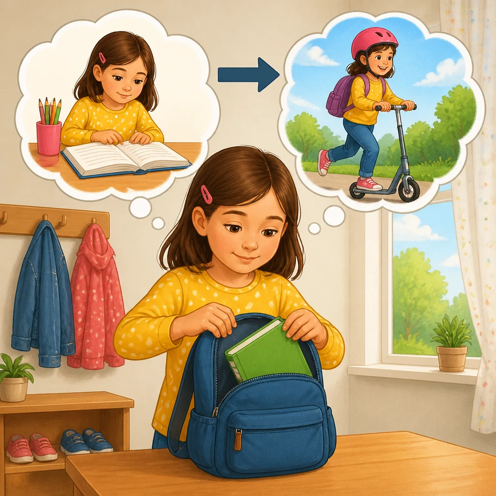
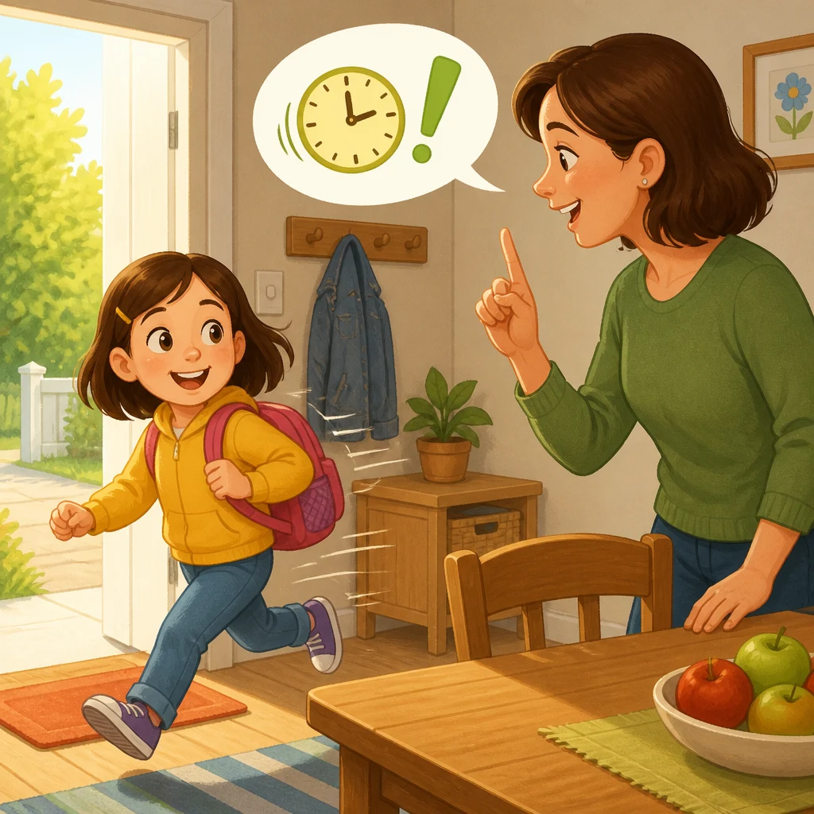
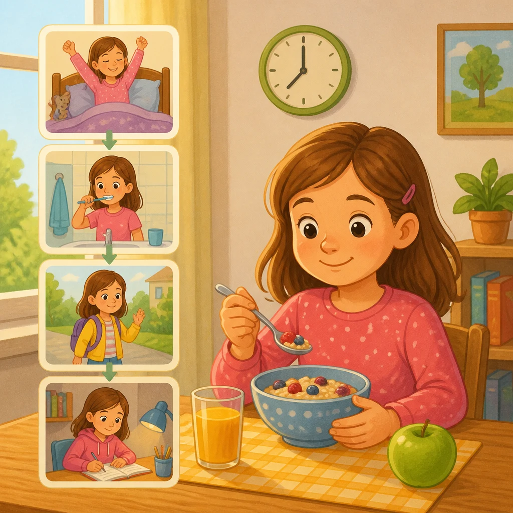
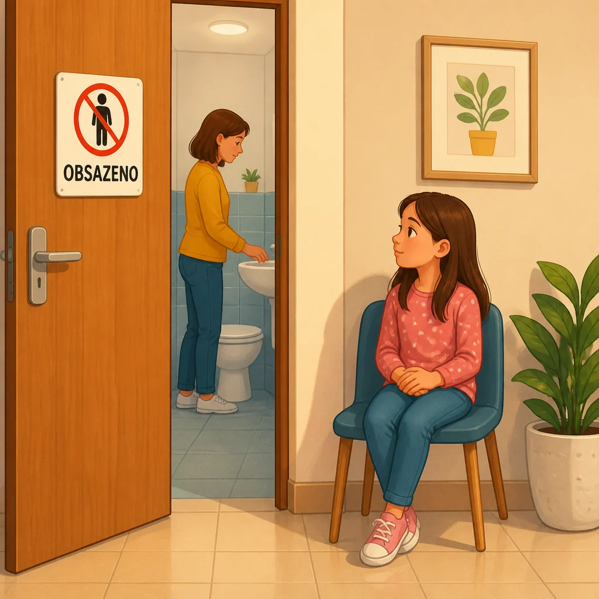
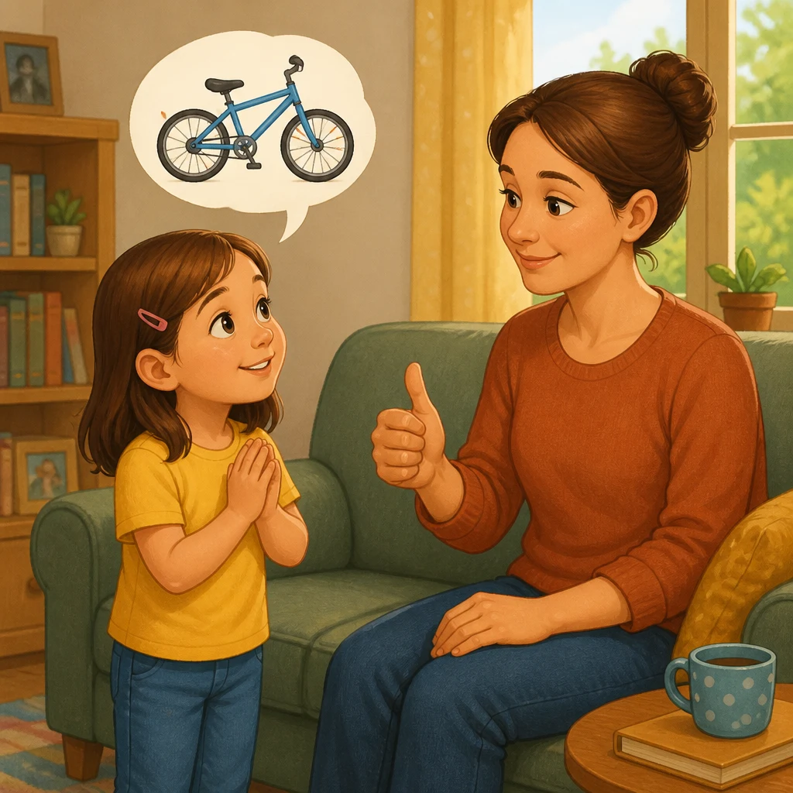

| Preview | File | Size | Words | Czech meanings | Status |
|---|---|---|---|---|---|
favor.webp |
144.6 kB | favore | laskavost | generated | |
 |
then2.webp |
185.2 kB | poi | potom, pak | generated |
pray.webp |
100.9 kB | pregare | modlit se, prosit | generated | |
remember.webp |
106.4 kB | ricordare | pamatovat si, připomenout si | generated | |
 |
immediately.webp |
156.2 kB | subito | hned, okamžitě | generated |
 |
usually.webp |
176.3 kB | di solito | obvykle | generated |
when.webp |
166.8 kB | quando | kdy, když | generated | |
enemy.webp |
180.7 kB | nemico | nepřítel | generated | |
 |
occupied.webp |
95.6 kB | occupato | obsazeno | generated |
 |
permission.webp |
151.9 kB | permesso | dovolení, svolení | generated |